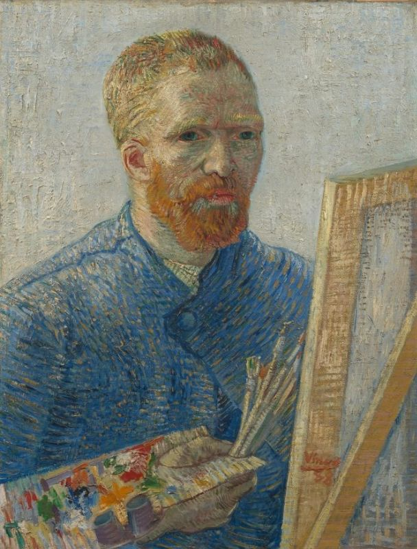
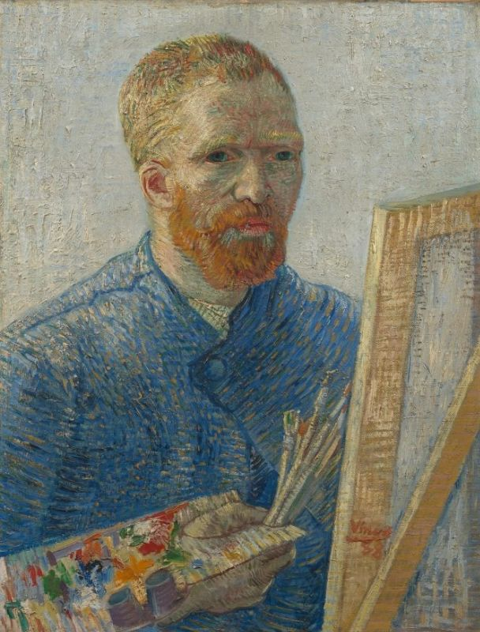

Geschiedenis
Vincent van Gogh had in zijn leven slechts twee schilderijen verkocht. Na zijn dood in 1890 liet Vincent zijn complete werk na aan zijn jongere broer Theo van Gogh. Na Theo zijn dood, ging de verzameling naar diens weduwe, Jo van Gogh-Bonger. Zij verkocht een aantal werken, maar hield een collectie bijeen die representatief was voor van Goghs werk. Ze wees ook nog een bod van Anton Kröller op de verzameling af.
Na haar overlijden in 1925, kwamen de kunstwerken in bezit van haar zoon Vincent Willem van Gogh. in 1960 richtte deze de Vincent van Gogh Stichting op. Naast hemzelf en zijn echtgenote, hadden ook zijn drie nog levende kinderen zitting in de stichting, evenals een vertegenwoordiger van de Nederlandse regering.
Op 21 juli 1962 werd een overeenkomst ondertekend tussen de Staat der Nederlanden en de Vincent van Gogh Stichting. De familie Van Gogh droeg voor 15 miljoen gulden de gehele verzameling, bestaande uit 200 schilderijen van Vincent van Gogh en (een paar met) Paul Gauguin, 400 tekeningen, en alle brieven van Vincent, over aan de staat. De belangrijkste voorwaarde was dat de gehele collectie in een aan Van Gogh gewijd museum zou worden ondergebracht. Hiermee werd de grondslag gelegd voor het Van Gogh Museum. Het museum opende in 1973 zijn deuren met Emile Meijer als eerste directeur. Destijds was het een rijksmuseum, dit is een museum dat als wettelijke taak een deel van de Rijkscollectie beheert. Tegenwoordig is het museum een zelfstandige stichting en maken de kunstwerken - op grond van de overeenkomst tussen de staat en de stichting - deel uit van de van de rijkscollectie.
Met ingang van 1 februari 2020, is Emilie Gordenker directeur van het museum als opvolger van Axel Rüger.